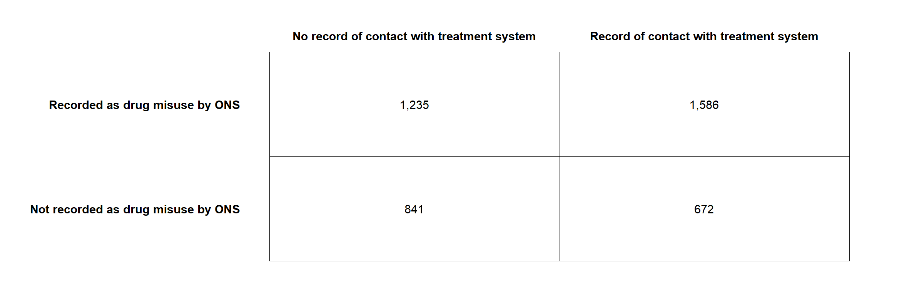

Deaths associated with substance use
Premature mortality and life-years lost due to drug and alcohol use
Premature mortality and substance use
- Ask 1: What proportion of premature deaths, given a cutoff point e.g. 55, are due to drugs and alcohol.
- Ask 2: Years of life lost (YLL) as a measure of premature mortality NB: ask Chioma for alcohol-specific deaths data by age and maybe LA.
- Ask 3: Add IMD to all of this - preferably by lower levels check feasibility first
1. Proportion of deaths
Number of deaths associated with drug use
The ONS classifies death related to drug poisoning according ICD-10 codes. Certain ICD-10 codes classify a death as a “drug misuse death”1. Each of these requires a specific substance (e.g. heroin) or substance category (e.g. opioids) to be indicated either in the ICD-10 code or on the death certificate.
There are deaths each year where the ONS holds no information on the substance(s) involved[1^]:
| Year of death registration | All drug poisonings | Number of deaths without substance information | Percentage without substance information |
|---|---|---|---|
| 2023 | 5,448 | 1,245 | 22.9 |
| 2022 | 4,907 | 1,239 | 25.2 |
| 2021 | 4,859 | 1,219 | 25.1 |
| 2020 | 4,561 | 1,050 | 23.0 |
Some of these will be classified as related to drug misuse where an ICD-10 code indicates mental and behavioural disorders due to drug use (excluding alcohol and tobacco) without a specific substance (e.g. F19 “multiple drug use and use of other psychoactive substances”). But others, broadly those coded as accidental/intentional self-poisonings or self-poisonings of unknown intent, will not be classfified as related to drug misuse unless a controlled drug under Misuse of Drugs Act 1971 was mentioned on the death record.
The data linkage between ONS mortality and NDTMS allows some of those deaths to be identified indirectly as related to drug misuse where the person that died had had contact with the drug treatment system within a year of their date of death.
Explanation of Data Processing Steps
Take drug poisoning deaths from ONS-NDTMS data linkage dataset provided by EAT (~300k rows) and deaths in treatment data (~30k rows) and aggregate them into one summary dataset at national level.
Step 1: Process the Drug Poisoning Deaths Data
Filter the data:
- Only includes deaths from the year 2022.
- Focuses on deaths recorded as “Total Deaths” (not broken down by substance).
- Keeps only cases flagged as drug misuse (or cases with no record of contact with the treatment system if they are not flagged as misuse).
Where cases are not flagged as drug misuse but there is a record of contact with the treatment system those deaths are assigned the label “additional poisoning deaths”:
::: {.cell}
:::
Adds meaningful labels:
- Labels deaths as either:
- “Initial poisoning deaths”: Cases recorded as drug misuse.
- “Additional poisoning deaths”: Cases not flagged as misuse but with no treatment system record.
- Labels deaths as either:
Groups and counts the data:
- Groups deaths by any specified categories (e.g., by region or age group). In this case, no additional grouping is applied.
- Calculates the number of deaths in each category.
This results in a summary dataset where each row represents a specific combination of grouping variables (e.g., year, death category), with a count of deaths for that combination.
Step 2: Process the Deaths in Treatment Data
The function process_deaths_in_treatment processes data about individuals who died during or after receiving treatment for substance abuse (file path: deaths_in_treatment_file). Here’s what it does: 1. Filters the data: - Only includes records from 2022. - Exclude alcohol-specific deaths
- Groups the data:
- Groups deaths by:
- Year (2022).
- Treatment status: Whether the person was still in treatment or had been discharged (e.g., died within a year after leaving treatment).
- Groups deaths by:
- Counts the data:
- Summarises the number of deaths in each group.
This creates a summarised dataset where each row represents a combination of year and category of death, with the total number of deaths for that group.
Step 3: Combine the Two Processed Datasets
The function combine_national_data merges the two processed datasets: 1. Aligns the data: - Standardises the naming. e.g: - Drug poisoning deaths are categorised as “Initial poisoning deaths” or “Additional poisoning deaths”. - Treatment-related deaths are categorised by treatment status (e.g., “Died in treatment”).
- Combines the data:
- Stacks the rows from the two datasets together, creating a single dataset.
- At this point the categories of deaths are mutually exclusive, so rather than merging the data we can just stack the rows.
Step 4: Relabel Death Categories
The function relabel_national_data refines the death category labels in the combined dataset: 1. Adds more descriptive labels for plots : - Initial poisoning deaths - Additional poisoning deaths - Non-poisoning deaths: Died in treatment - Non-poisoning deaths: Died within a year of discharge - Non-poisoning deaths: Died one or more years following discharge
Final Dataset (national_data)
After these steps, the national_data dataset is an aggregated summary:: - Each row represents a unique combination of: - Year: Always 2022 in this example. - Death Category: E.g., “Initial poisoning deaths,” “Non-poisoning deaths: Died in treatment.” - Each row includes a count of deaths for that category.
2: This is the first four rows of Table 11 in the same release.
2. Years of life lost due to substance use
Years of life lost (YLL) is a measure of the impact of premature mortality, helpfully defined by Public Health England here
Chudasama et al. (2022) investigated five methods for estimating YLL3. The first two methods are feasible with the available data for YLL from drug use and alcohol specific deaths. Only the drug-related YLL could be segmented by geographical estimates of deprivation.
All five methods are detailed in the supplementary PDF here.
Mortality data
- Deaths related to drug misuse as defined by the ONS4.
- Additional drugs related to drugs misuse that the ONS had insufficient data to classify, but can be inferred from the data linkage of ONS data with NDTMS data by Better Outcomes through Linked data (BOLD) 5.
- Alcohol specific deaths
Footnotes
Chudasama, Y.V., Khunti, K., Gillies, C.L., Dhalwani, N.N., Davies, M.J., Yates, T., & Zaccardi, F. (2022). Estimates of years of life lost depended on the method used: tutorial and comparative investigation. Journal of Clinical Epidemiology, 150, pp. 42-50. Available at: https://doi.org/10.1016/j.jclinepi.2022.06.012 [Accessed 6 Nov. 2024].↩︎
Chudasama, Y.V., Khunti, K., Gillies, C.L., Dhalwani, N.N., Davies, M.J., Yates, T., & Zaccardi, F. (2022). Estimates of years of life lost depended on the method used: tutorial and comparative investigation. Journal of Clinical Epidemiology, 150, pp. 42-50. Available at: https://doi.org/10.1016/j.jclinepi.2022.06.012 [Accessed 6 Nov. 2024].↩︎
Chudasama, Y.V., Khunti, K., Gillies, C.L., Dhalwani, N.N., Davies, M.J., Yates, T., & Zaccardi, F. (2022). Estimates of years of life lost depended on the method used: tutorial and comparative investigation. Journal of Clinical Epidemiology, 150, pp. 42-50. Available at: https://doi.org/10.1016/j.jclinepi.2022.06.012 [Accessed 6 Nov. 2024].↩︎
Not publicly available↩︎
Not publicly available↩︎